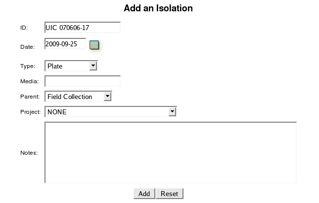
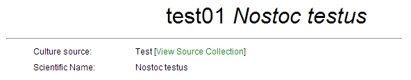

Adding Field Collection Data
Field collection data can added using either a web form or by uploading a spreadsheet. In either case, the same information can be added to the CYANOS database.
by Web Form
- Select Add New from the Collection menu.
- Enter information into the Add a New Collection form.

- Click the Create Button.
Spreadsheet Upload
Often multiple field collections are made as part of a collection trip, thus creating a spreadsheet is typically more useful than the web form. As stated in the Interface Help Guide, a spreadsheet can be either a Microsoft Excel XML or OpenOffice.org file. The upload form can be access via the menu Collection > Upload Collections. The format of the spreadsheet should be as follows.
| Collection ID | Date | Collected by | Location Name | Latitude | Longitude | Lat/Long | Precision | Notes |
|---|---|---|---|---|---|---|---|---|
For each entry, only the "Collection ID" is required, although the collection date will be set to a default value, i.e. January 1, 1900, if not present in the spreadsheet.
Return to table of contentsIsolations
The isolation information stored allows one to keep track of isolation work as well as connect strains with collections. Isolation records can contain the following parameters: date, type, media, parent material, and notes. As with field collections, isolation IDs can consist of any combination of alphanumeric characters and must be unique. This isolation ID is important to connect strain records with isolation and collection information.
Adding Isolation Data
As with field collection data, isolation data can added using either a web form or by uploading a spreadsheet. In either case, the same information can be added to the CYANOS database.
by Web Form
- Locate the parent field collection record.
- Click the Add an Isolation button at the bottom of the Isolation List.

- Enter information into the Add an Isolation subform.

- Click the Add Button.
Spreadsheet Upload
As stated in the Interface Help Guide, a spreadsheet can be either a Microsoft Excel XML or OpenOffice.org file. The upload form can be access via the menu Collection > Upload Isolations. The format of the spreadsheet should be as follows.
| Isolation ID | Collection ID | Date | Parent | Type | Media | Notes | Project Code |
|---|---|---|---|---|---|---|---|
For each entry, the "Isolation ID" and "Parent" are required, although the isolation date will be set to a default value, i.e. January 1, 1900, if not present in the spreadsheet. The "Parent" value should be either the isolation ID of the parent isolation or the collection ID, if this isolation was made directly from the field collected material.
Return to table of contentsLinking Isolation and Strain Records
Ultimately, an isolation should be linked to a strain in the collection. Since the strain will be linked to chemical and bioassay data, the isolation link allows one to associate bioassay and compound information with collection data, e.g. collection date and geographic location. To link a strain with an isolation record, the culture source of the strain should be set to the isolation ID of the parent isolation. The following figure shows a strain record with a culture source that does not corresponds to an isolation ID.

Once the culture source properly set to an isolation ID, the CYANOS database should be able to link the strain record with the isolation and collection information.

Return to table of contentsRequired Roles
Required permissions listed in this table denote the role and permission bit, in parenthesis. Actions in italics utilize global level permissions only.
| Action | Required Permission |
| Add a new field collection | culture(Create) |
| Modify a field collection | culture(Write) |
| Add a new isolation | culture(Create) |
| Modify an isolation | culture(Write) |
Main Table of Contents | Find Help | Search Help